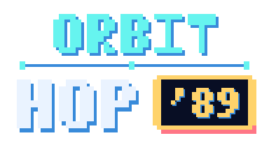

BABILABS / ORBIT HOP '89
Privacy Policy
A clear view of local saves, platform services and the data behind your flight.
OFFLINE PLAY LOCAL PROGRESS

01 / Your game, your device
Orbit Hop '89 is an offline arcade game. It has no accounts, advertising or in-app purchases. The reviewed app code does not send gameplay records to BabiLabs and contains no analytics or third-party crash-reporting integration. This does not mean that no data is processed: the game saves information locally, and your operating system, app store, web host and email providers may process information separately.
02 / What the game stores
Local storage lets you keep your progress and preferences between sessions:
- Arcade records: three-character leaderboard names, scores, hop counts, run duration and date, plus personal best score, survival time and hops.
- Galaxy Journey: completed levels, stars, best scores and times, unlock progress, generation seeds, saved attempts and checkpoints, including ship and hazard state.
- Preferences: sound and music settings, tutorial status and beginner-assist progress.
These records are stored in the app's preferences using shared_preferences. Choose initials or a nickname rather than identifying information. There is no app-operated online leaderboard or cloud-sync service.
Bundled audio may be copied to private temporary storage by the audio plugin. Its randomly generated player/cache IDs are local technical identifiers, not advertising IDs or hardware identifiers read by the game.
03 / SDKs and platform services
The app uses Flutter, Flame for gameplay, shared_preferences for local saves, and audioplayers for bundled sound and music. The source audit found no advertising, billing, account, analytics or crash-upload SDK declared or initialized.
The audio package has an HTTP dependency, but the reviewed native app uses bundled asset playback, not remote audio. A dependency's network capability alone does not establish that the game transmits data.
The Android release source removes internet, network-state and advertising-ID permissions and disables Android backup. The iOS app privacy manifest declares no app-owned collected data or tracking and declares its use of preferences. These source declarations do not replace inspection of the final merged Android manifest and all SDK privacy manifests in the iOS archive.
Apple, Google and your device manufacturer may process store downloads, device diagnostics, crash information or backup data under their own settings and policies. This is separate from app-operated telemetry. iOS or system backups may include game saves; the actual release backup/restore behavior still requires confirmation. Manage diagnostics and backups in your device or platform settings.
Platform information: Apple Privacy Policy and Google Privacy Policy.
04 / Keeping and deleting your saves
Game records remain locally until removed or replaced. In Settings → Clear High Scores, confirm deletion to remove the Arcade leaderboard entries. This does not reset personal best records, Journey progress or preferences.
To remove all local game data on Android, use the system's app settings to clear this app's storage/data. On iOS, use Delete App, rather than Offload App, to remove the app and its local data. This loses local progress. Backups or device transfers can retain or restore copies; manage those separately with your platform provider. BabiLabs cannot remotely retrieve or erase saves on your device.
05 / Visiting these pages
These pages are hosted on GitHub Pages. Requests disclose technical connection data, such as your IP address, browser information, requested URL and access time, to the hosting infrastructure so it can deliver and secure the website. GitHub describes its processing and retention in its Privacy Statement.
These pages add no cookies, analytics, tracking scripts, remote fonts or embedded third-party media. Following an external link opens another provider's service. Opening Privacy or Support from the game uses your system browser; that visit is separate from offline gameplay.
06 / Email and privacy requests
The responsible publisher is Ali Babi (BabiLabs), Bilge Sok. No 9, Büyükçekmece, Istanbul, Türkiye. Contact babilabs@duck.com for support or privacy questions.
If you email us, your email address, message, attachments and email metadata are processed to answer your request and handle follow-up. The documented contact route uses DuckDuckGo Email Protection forwarding to GMX. See DuckDuckGo's email privacy terms and GMX's privacy notice. Your own email provider also processes your message. Please share only what is needed; do not send passwords or unrelated personal information.
Support correspondence is separate from local game saves. Pending publisher confirmation: the support-email retention/deletion schedule, applicable provider arrangements and international-transfer safeguards, and the postal code needed to complete the publisher's postal address. No fixed retention period or transfer guarantee is asserted here.
You may contact us to request access, correction or deletion of information held through support correspondence, or to ask about other rights available under applicable law. Where applicable, you may complain to your data-protection authority. Local game records must be managed on your device as described above.
07 / Updates and review status
Last updated: . Based on the privacy/SDK audit of 6 November 2026 and a current source review on 7 November 2026.
Before final release declarations, BabiLabs still needs to review the resolved dependency lockfile, both platform SDK inventories, merged Android permissions, iOS archive privacy report and native offline/backup behavior. Package version ranges may resolve newer SDKs than the audit samples. This policy must be updated if the verified release changes the processing described here.